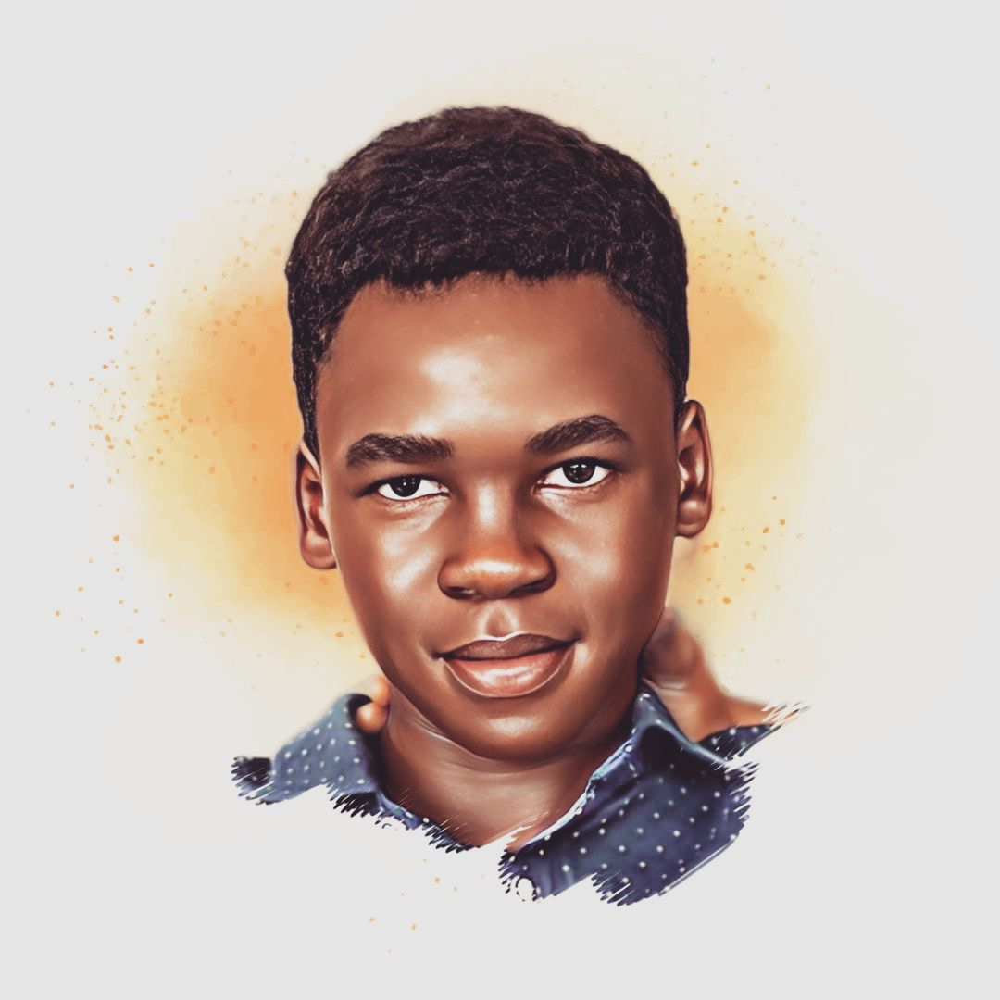
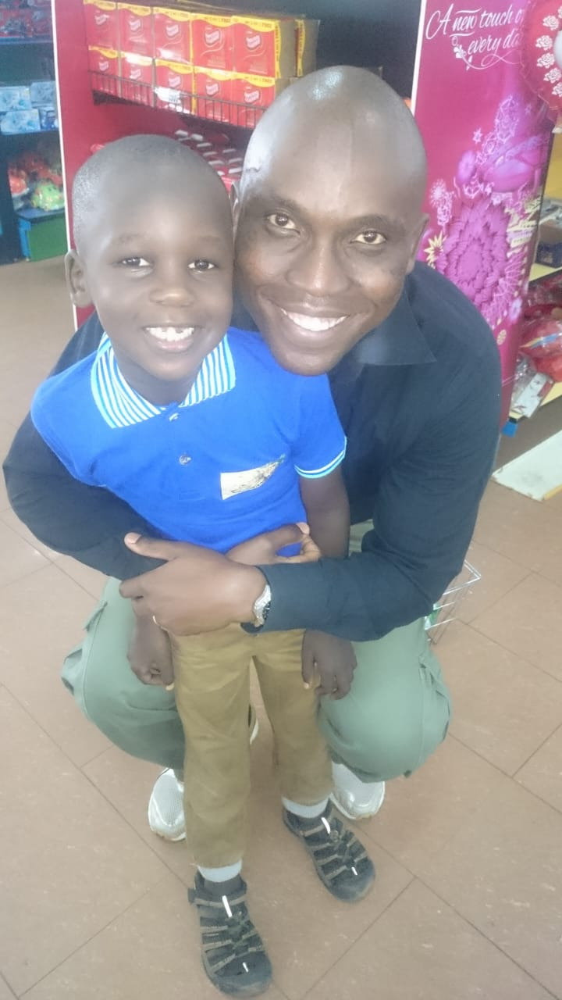
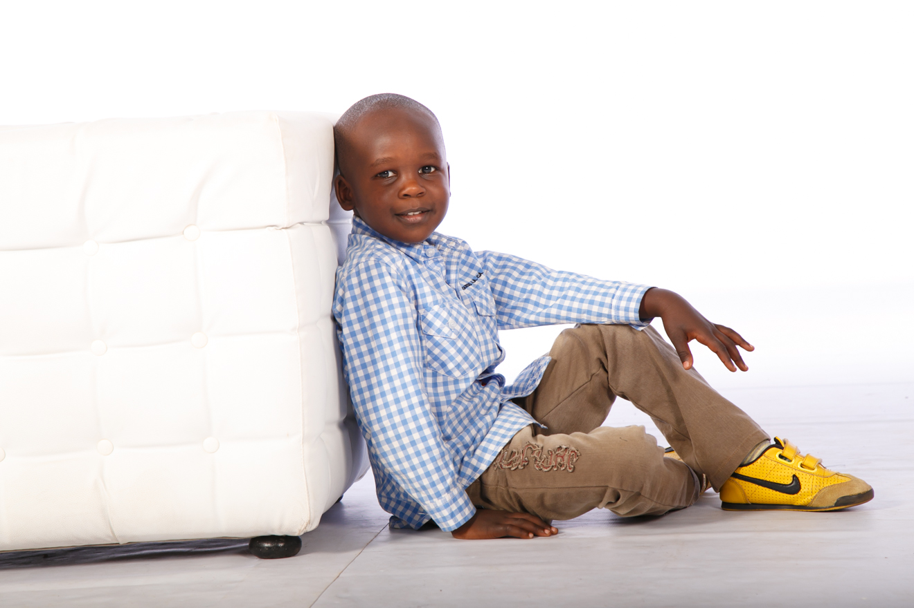
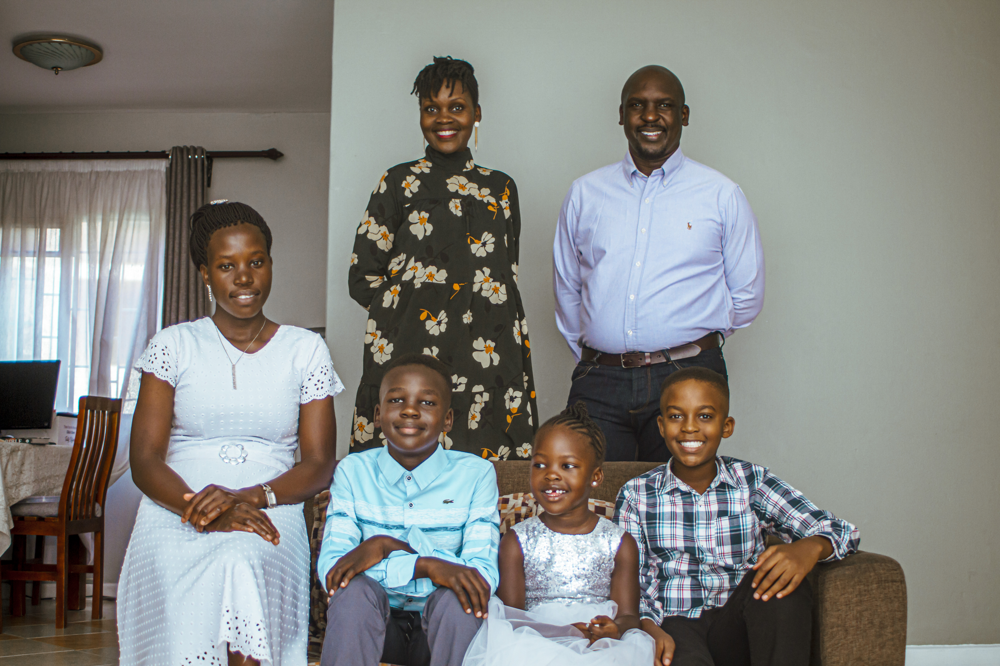
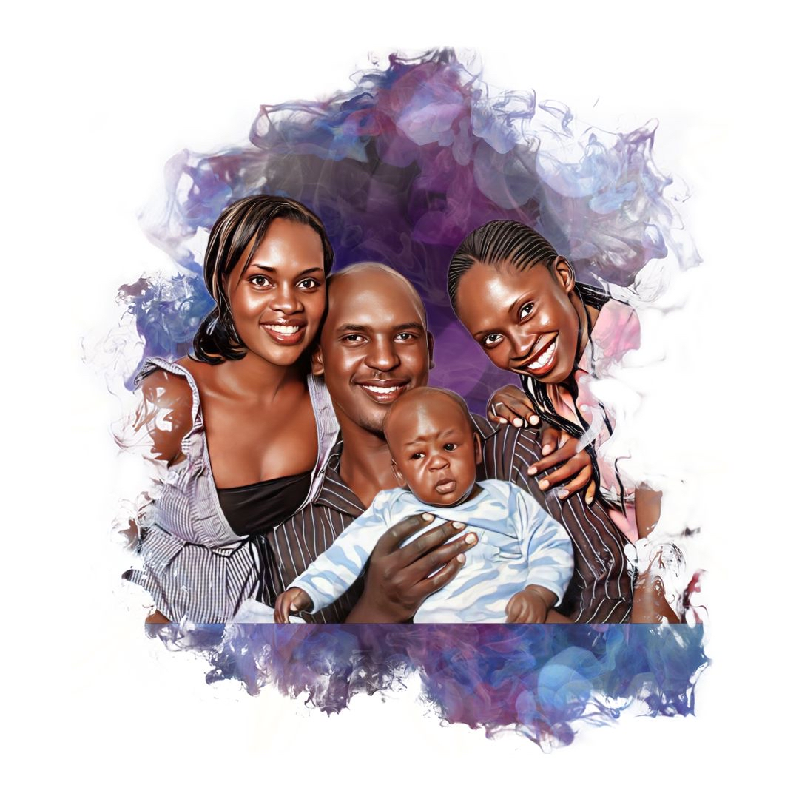

Happy birthday,
Nimaro.
Seventeen years ago today, at 05:53 in the morning, you made your grand entrance. This is for you, from Mama and Daddy.
I remember it vividly. I had been standing outside the hospital room since 11:00 PM the previous night, living through every tense, breathless moment of anticipation. You had clearly decided that you were coming on your own terms, and there was simply no stopping you.
That fierce, unstoppable drive has never left you. We see it in everything you do today, especially in the water, just like when you swam your heart out in Kenya this last time, leaving everything on the line with every stroke.
When you finally arrived, the atmosphere in the room shifted instantly. There was overwhelming joy and more than a few tears of relief. And when we took you home, your mother could not stop smiling. Her heart was entirely full.
Everyone who came to visit wanted a turn at carrying you, completely captivated. 17 A2 was the first place you ever stayed after leaving the hospital, and it is no wonder that jaja earned the affectionate moniker jaja Nim Nim.
Nimaro.
I am loved.
You have always lived up to the profound meaning woven into your very name. You are truly, deeply loved, and that has been the constant soundtrack of your life.



You were always such an adorable child, endlessly talking, engaging, and greeting everyone you met with a warmth that drew people straight to you.
Seventeen years, one chapter at a time.
The world has had the incredible privilege of watching you grow and evolve through every chapter.
{{ c.d }}
We have watched you navigate the complex halls of school, steadily forging your path and growing into a capable, grounded young man. Through every stage, every challenge, and every triumph, our pride in who you are and who you are becoming has only grown deeper.

Your family's love has taken so many wonderful forms.
